{kind=link}
I built an infrared speed sensor for my air cannon.
 |
| 240 frames/sec Galaxy S7 |
Why?
The cannon is surprisingly powerful, but observing power isn't the same as quantifying it. A couple years ago I tried to quantify this power using a stopwatch...
{kind=link}
I shot an orange straight up and recorded its flight time. In a residential neighborhood. Next to parked cars. Turns out straight up is only relatively straight.
| 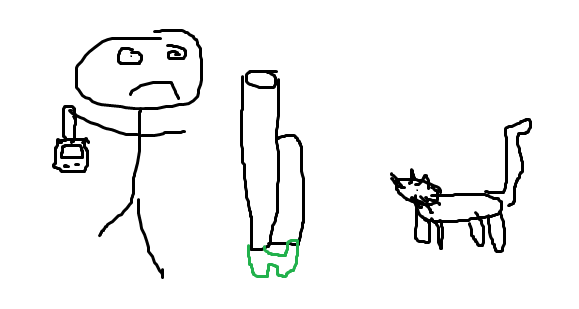 |
| Discount artist's rendition |
{kind=link}
No cars/people/pets were hit, but the fear I realized as the orange began it's descent to earth erased my experimental concentration. Basically I don't remember the results, and didn't iterate.
Download
Video Overview
Design
Break beams! I don't know of a simpler non-invasive method for measuring velocity. Two infrared beams are positioned a set distance apart, and a microprocessor records the time for an object pass between them.
| 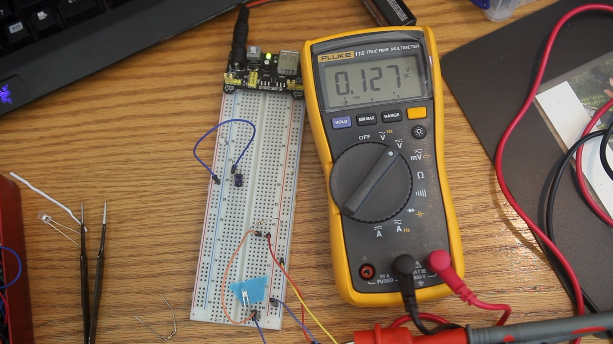 |
| Not broken - logical LOW |
{kind=link}
| 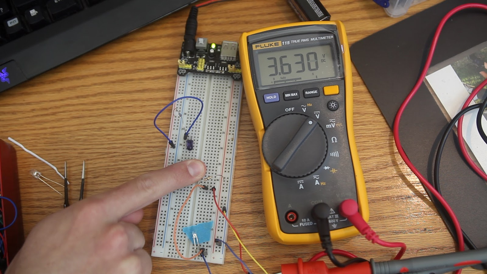 |
| Broken - logical HIGH |
{kind=link}
A voltage divider is formed using the IR detector and a 100kΩ resistor. I have added no filtering whatsoever. Hopefully enclosing the beams in a cardboard tube will stop ambient light from affecting the infrared detectors. #NoFilter
First I cut the cardboard tube with a hacksaw, then a laser.
| 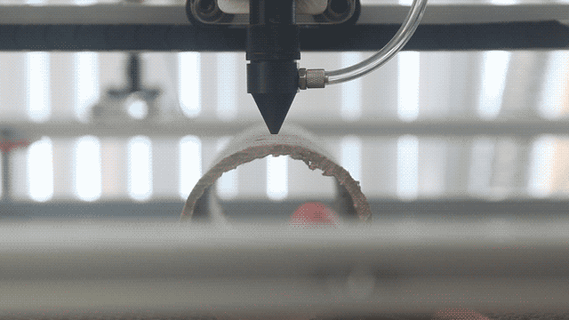 |
| Laser cutting holes for the beam and set screws |
{kind=link}
Screws are used to mount the cardboard tube to the air cannon.
| 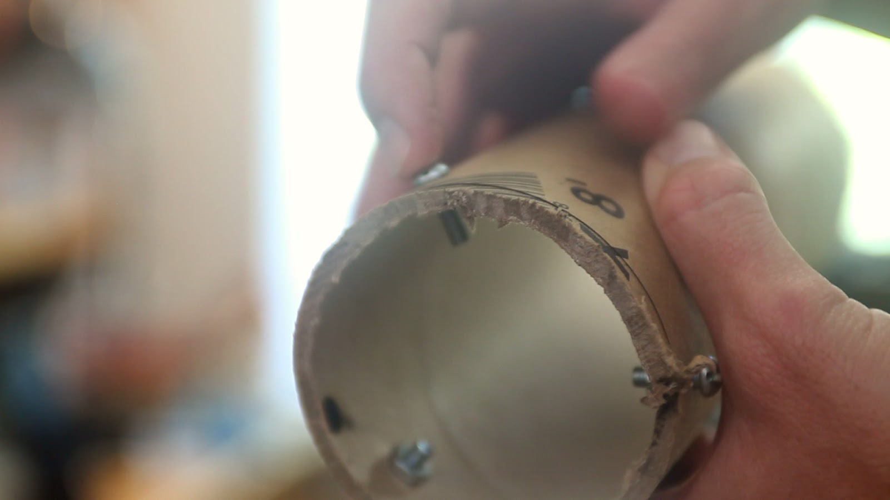 |
| Sensor mount |
{kind=link}
Some sortof display to display the readout is needed. I upcycled an old video prop. Here's a post about said prop.
| 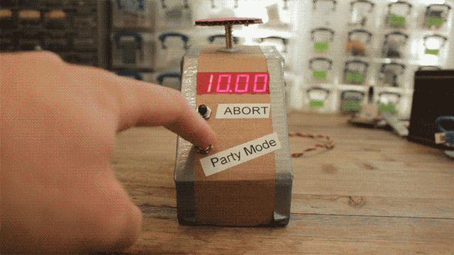 |
| Sacrifice |
{kind=link}
| 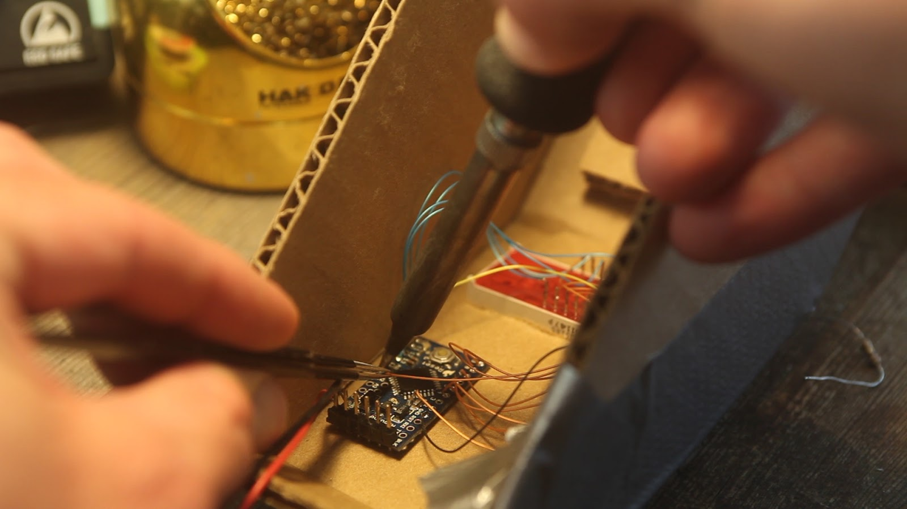 |
| Arduino Pro Mini |
{kind=link}
| 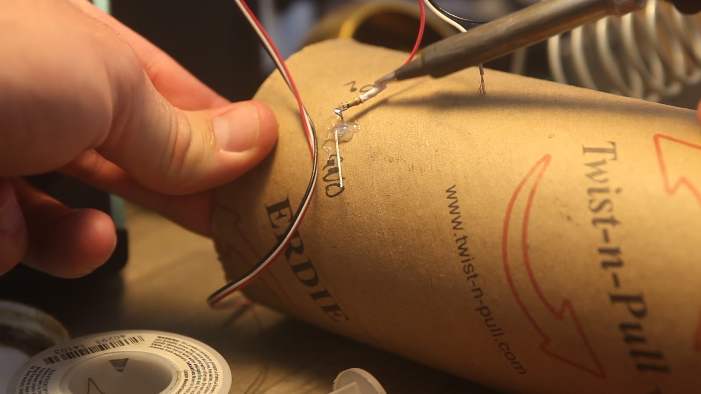 |
| Beam wiring |
{kind=link}
| 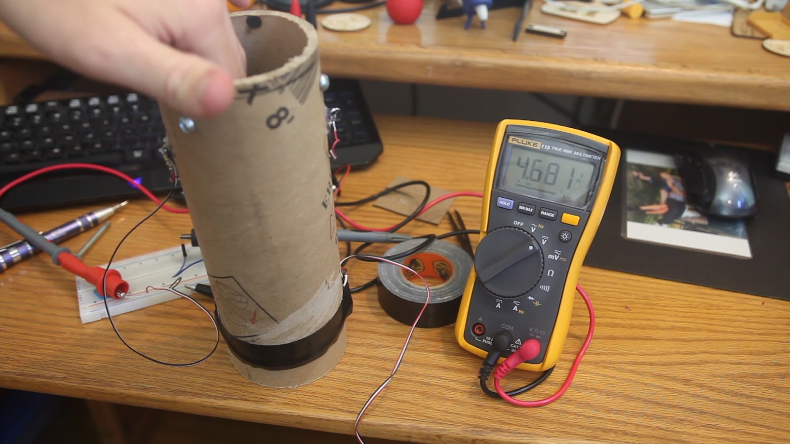 |
| Testing one beam |
{kind=link}
| 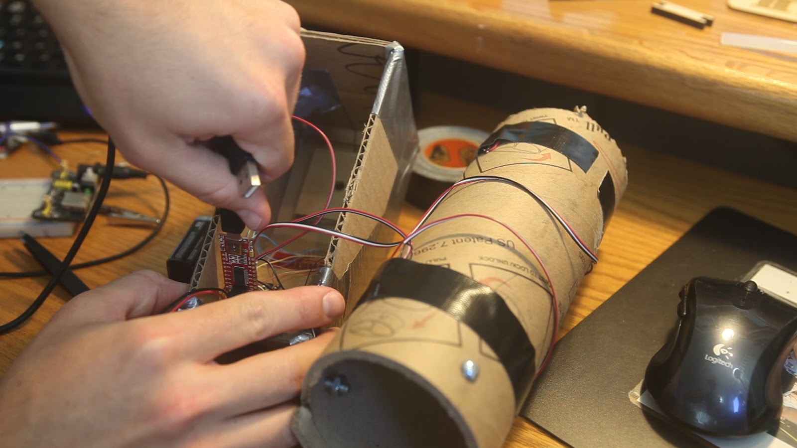 |
| Programming |
{kind=link}
velocity = distance / time
Velocity is displayed in feet per second, which was a little stupid since I kept asking Siri to convert to mph.
The 7 segment display is multiplexed without using resistors for easy wiring. There are more details in that blog post linked above.
Function
| 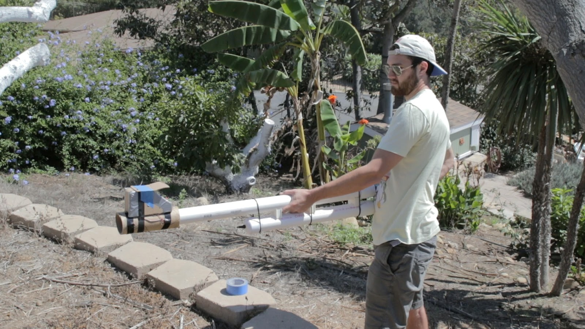 |
| Finished! |
{kind=link}
My #NoFilter didn't pay off; bright ambient light rendered the sensor useless. I applied aluminum foil liberally to block ambient light.
| 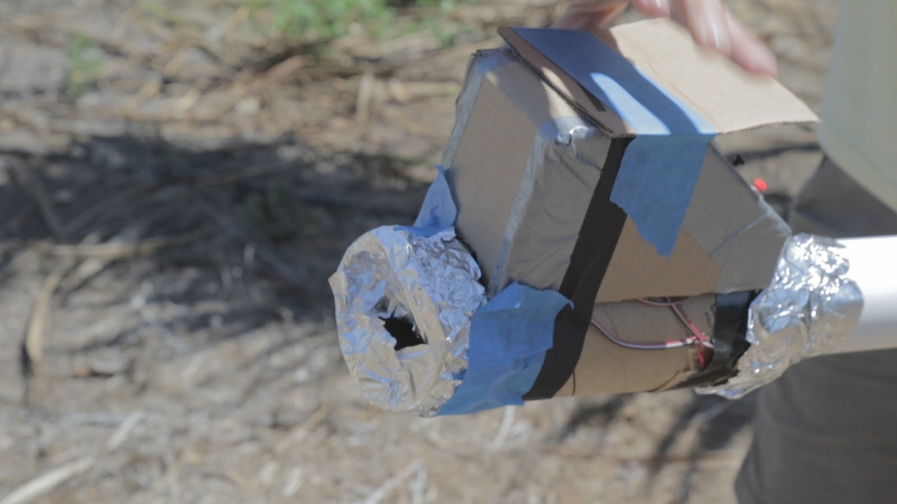 |
| Keeps the government out |
{kind=link}
The aluminum foil looked horrible, and didn't work at all. Next shot was going to be in the shadiest spot we could find.
| 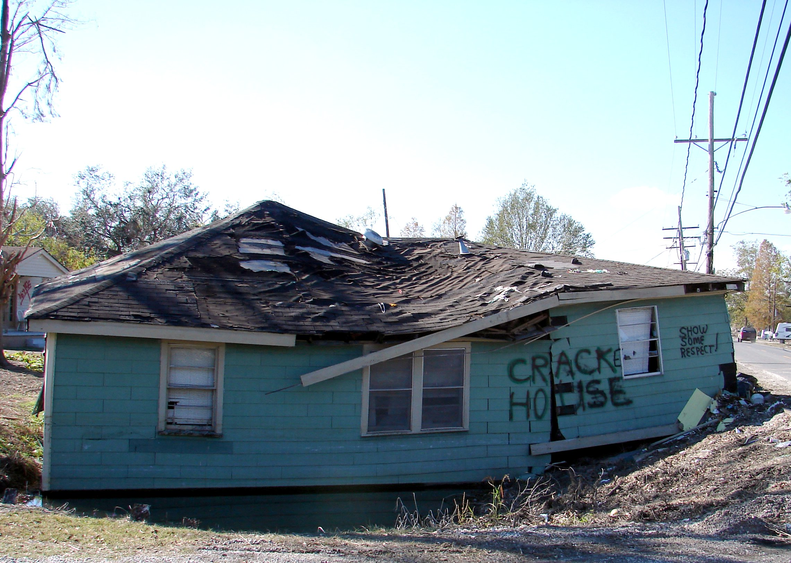 |
| Shady |
{kind=link}
Just kidding.
The underside of this deck will do.
{kind=link}
256 fps or 175 mph!!!!!
{kind=link}
So.. The sensor works, as long as you're shooting in the shade or at night.
How Powerful?
We know:
- Starting position and velocity = 0
- end velocity = 78 m/s
- end position = 0.95 m
- mass 0.069 kg
- Average acceleration
- Acceleration time
- Projectile energy
- Average power
| 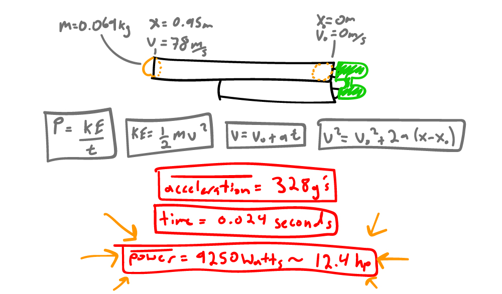 |
| Power calculation |
{kind=link}
Results:
- Average acceleration = 328 g's
- Projectile energy = 211 joules
- Acceleration time = 0.024 seconds
- Average power = 9250 Watts ~ 12.4 horsepower
Acceleration and power blew my mind. I would not have guess the cannon is transferring nearly 10kW of power. And 328 g's means the orange is experiencing 222 N or 50 lb of force!
Conclusion
#NoFilter was dumb. I'm going to fix this with a high-pass filter and amplifier.
The cannon produces way more power than I ever thought it would.
I may be filming the cannon with a real actual high speed camera in the near future.
Air Cannon Build Secrets
There's only one thing you need to worry about: how fast can you release the pressurized air?
Sprinkler values are commonly used, but when left stock are a literal bottleneck. You need to carve them out, like removing backflow reduction features. If your cannon is making noises like a dying elephant, it means air is restricted and you're losing power. 90 degree bends don't help either, but a straight valve makes a long cannon.
The End
That's it.
That's all I got.
Add a comment